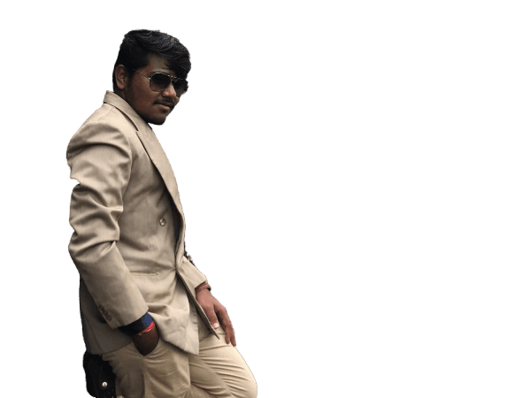

<section class="about-section sec-padding">
    <div class="container">
        <div class="row">
            <div class="section-title">
                <h2>About me</h2>
            </div>
        </div>
        <div class="row">
            <div class="about-img">
                <div class="img-box">
                    
                </div>
            </div>
            <div class="about-text">
                <p>I am a dedicated and experienced technical associate with 2.7 years of hands-on expertise in Angular
                    and .NET MVC development. My role has involved designing, implementing, and maintaining robust web
                    applications, ensuring high performance and user satisfaction.</p>
                <h3>
                    Skills
                </h3>
                <div class="skills">
                    <div class="skill-item">Angular15</div>
                    <div class="skill-item">SQL</div>
                    <div class="skill-item">ChatGPT</div>
                    <div class="skill-item">BlackBox </div>
                    <div class="skill-item">.NET Api's</div>
                    <div class="skill-item">.NET MVC</div>

                </div>
                <div class="about-tabs">
                    <button type="button" class="tab-item " [class.active]="selectedTab === 'education'"
                        (click)="showTab('education')">Education</button>
                    <button type="button" class="tab-item " [class.active]="selectedTab === 'experience'"
                        (click)="showTab('experience')">Experience</button>
                </div>
                <!-- <div *ngIf="selectedTab === 'education'" class="tab-content"
                    [class.active]="selectedTab === 'education'" id="education">
                    <div class="timeline">
                        <div class="timeline-item">
                            <span class="date">
                                2013-2016
                            </span>
                            <h4>Diploma Engg -
                                <span>GOVT Polytechnic</span>
                            </h4>
                            <p>Year 1:

                                Institution: Govt.Polytechnic Zalaki
                                Location: Zalaki
                                Details: Completed the first year focusing on the fundamentals of Electronics & Communication. Courses included basic electronics, circuit theory, and introductory communication systems.
                                
                                Years 2 & 3:
                                
                                Institution: Govt.Polytechnic Bijapur
                                Location: Bijapur
                                Details: Completed the remaining two years with advanced coursework and practical training in Electronics & Communication. Key subjects included digital electronics, microprocessors, telecommunications, and project-based learning.
                               </p>
                        </div>
                    </div>
                    <div class="timeline">
                        <div class="timeline-item">
                            <span class="date">
                                2017-2021
                            </span>
                            <h4>Bacholer of Engg -
                                <span>Jain College of Engg</span>
                            </h4>
                            <p>Institution: Jain College of Engg Belagavi
                                Duration: 2018 - 2021
                                
                                Location: Belagavi
                                Key Courses: Advanced Electronics, Communication Systems, Microprocessors, Digital Signal Processing, Embedded Systems
                                Projects and Achievements:
                                Bluetooth Controlled Car:
                                Achievement: Won First Prize in Hobby Level Project
                                Description: Designed and developed a car controlled via Bluetooth using an Arduino microcontroller. The project involved programming the microcontroller, integrating Bluetooth modules, and building the car's mechanical components.
                                Writing Machine:
                                Achievement: Runner-up in Mini Level Project
                                Description: Created an automated writing machine capable of writing text on paper. The project included designing mechanical systems, programming stepper motors, and integrating sensors for precise control.</p>
                        </div>
                    </div>
                </div> -->
                <div *ngIf="selectedTab === 'education'" class="tab-content"
                    [class.active]="selectedTab === 'education'" id="education">
                    <div class="timeline">
                        <div class="timeline-item">
                            <span class="date">2013-2016</span>
                            <h4>Diploma Engg - <span>GOVT Polytechnic</span></h4>
                            <p>
                                Year 1:<br>
                                <Span style="font-weight: bold;">Institution:</Span>Institution: Govt. Polytechnic Zalaki<br>
                                <Span style="font-weight: bold;">Location:</Span> Zalaki<br>
                                <Span style="font-weight: bold;">Details:</Span>Details: Completed the first year focusing on the fundamentals of Electronics &
                                Communication. Courses included basic electronics, circuit theory, and introductory
                                communication systems.<br><br>

                                Years 2 & 3:<br>
                                <Span style="font-weight: bold;">Institution:</Span> Govt. Polytechnic Bijapur<br>
                                <Span style="font-weight: bold;">Location:</Span>Location: Bijapur<br>
                                <Span style="font-weight: bold;">Details:</Span> Completed the remaining two years with advanced coursework and practical
                                training in Electronics & Communication. Key subjects included digital electronics,
                                microprocessors, telecommunications, and project-based learning.
                            </p>
                        </div>
                    </div>
                    <div class="timeline">
                        <div class="timeline-item">
                            <span class="date">2017-2021</span>
                            <h4>Bachelor of Engg - <span>Jain College of Engg</span></h4>
                            <p>
                                <Span style="font-weight: bold;">Institution:</Span> Jain College of Engg Belagavi<br>
                                <Span style="font-weight: bold;">Duration:</Span> 2018 - 2021<br>
                                <Span style="font-weight: bold;">Location:</Span> Belagavi<br>
                                <Span style="font-weight: bold;"> Key Courses:</Span> Advanced Electronics,
                                Communication Systems, Microprocessors, Digital Signal Processing, Embedded Systems<br>


                            </p>
                            <p> <br>
                                <br>

                                Projects and Achievements:
                            </p>
                            <ul>
                                <li>
                                    <strong>Bluetooth Controlled Car:</strong><br>
                                    <Span style="font-weight: bold;">Achievement:</Span> Won First Prize in Hobby Level
                                    Project<br>
                                    <Span style="font-weight: bold;">Description:</Span> Designed and developed a car
                                    controlled via Bluetooth using an Arduino microcontroller. The project involved
                                    programming the microcontroller, integrating Bluetooth modules, and building the
                                    car's mechanical components.
                                </li>
                                <li>
                                    <strong>Writing Machine:</strong><br>
                                    <Span style="font-weight: bold;">Achievement:</Span> Runner-up in Mini Level
                                    Project<br>
                                    <Span style="font-weight: bold;">Description:</Span> Created an automated writing
                                    machine capable of writing text on paper. The project included designing mechanical
                                    systems, programming stepper motors, and integrating sensors for precise control.
                                </li>
                            </ul>
                        </div>
                    </div>
                </div>

                <!-- <div *ngIf="selectedTab === 'experience'" class="tab-content"
                    [class.active]="selectedTab === 'experience'" id="experience">
                    <div class="timeline">
                        <div class="timeline-item">
                            <span class="date">(July-2019)-(Aug-2019)</span>
                            <h4>IOT & Embedded Systems - K-tech innovation Hub Powered by IKP.</h4>
                            <p>lorem 30</p>
                        </div>
                    </div>
                </div> -->
                <div *ngIf="selectedTab === 'experience'" class="tab-content" [class.active]="selectedTab === 'experience'" id="experience">
                    <div class="timeline">
                        <!-- Internship Experience -->
                        <div class="timeline-item">
                            <span class="date">(July 2019 - August 2019)</span>
                            <h4>IOT & Embedded Systems - K-tech Innovation Hub Powered by IKP</h4>
                            <p>
                                <Span style="font-weight: bold;">Institution:</Span> K-tech Innovation Hub Powered by IKP<br>
                                <Span style="font-weight: bold;"> Location:</Span> Belagavi<br>
                                    <Span style="font-weight: bold;"> Duration:</Span> 45 days<br>
                                        <Span style="font-weight: bold;">Details:</Span> Participated in a 45-day internship program focused on IoT and Embedded Systems. During this time, I:
                            </p>
                                <ul>
                                    <li>Built a GPS tracker</li>
                                    <li>Developed a smart home system</li>
                                </ul>
                            
                        </div>
                        <!-- Current Job Experience -->
                        <div class="timeline-item">
                            <span class="date">Current</span>
                            <h4>Software Developer - Atyati Technologies Pvt. Limited</h4>
                            <p>
                                <Span style="font-weight: bold;">Company:</Span> Atyati Technologies Pvt. Limited<br>
                                <Span style="font-weight: bold;">Location:</Span> Banglore<br>
                                <Span style="font-weight: bold;">Duration:</Span> 2.7 years<br>
                            </p>
                            <p> Details: Currently working as a software developer with experience in:</p>
                               
                                <ul>
                                    <li>Angular 15</li>
                                    <li>.NET 4.5</li>
                                </ul>
                                <Span style="font-weight: bold;">Achievements:</Span>
                                <ul>
                                    <li>Won Extra Mile Performer Award</li>
                                </ul>
                                <Span style="font-weight: bold;">Skills and Learnings:</Span>
                                <ul>
                                    <li>Gained extensive experience in web development using Angular and .NET</li>
                                    <li>Learned best practices in software development, teamwork, and project management</li>
                                </ul>
                           
                        </div>
                    </div>
                </div>
                
                <a href="#" class="btn">Download CV</a>
                <a href="#" routerLink="/contact" class="btn">Contact Me</a>
            </div>
        </div>
    </div>

</section>